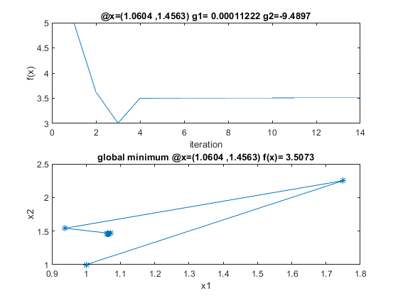

Contents
%%%%%%%%%%%%%% Main Entrance %%%%%%%%%%%%%%%%%%%%%%%%%%%%%%%%%%%%%%%%%%%%%% %%%%%%%%%%%%%% By Max Yi Ren and Emrah Bayrak %%%%%%%%%%%%%%%%%%%%%%%%%%%%% % Instruction: Please read through the code and fill in blanks % (marked by ***). Note that you need to do so for every involved % function, i.e., m files.
Optional overhead
clear; % Clear the workspace close all; % Close all windows
Optimization settings
Here we specify the objective function by giving the function handle to a variable, for example:
f = @(x)(x(1)^2+(x(2)-3)^2); % replace with your objective function % In the same way, we also provide the gradient of the % objective: df = @(x)[x(1)*2;(x(2)-3)*2]; % replace accordingly g = @(x)[-2*x(1)+x(2)^2;5*x(1)+(x(2)-1)^2-15]; dg=@(x)([-2,2*x(2);5,2*(x(2)-1)]); % Note that explicit gradient and Hessian information is only optional. % However, providing these information to the search algorithm will save % computational cost from finite difference calculations for them. % % Specify algorithm %opt.alg = 'matlabqp'; % 'myqp' or 'matlabqp' opt.alg = 'myqp' ; % Turn on or off line search. You could turn on line search once other % parts of the program are debugged. opt.linesearch = true; % false or true % Set the tolerance to be used as a termination criterion: opt.eps = 1e-3; % Set the initial guess: x0 = [1;1]; % Feasibility check for the initial point. if max(g(x0)>0) errordlg('Infeasible intial point! You need to start from a feasible one!'); return end
Run optimization
Run your implementation of SQP algorithm. See mysqp.m
solution = mysqp(f, df, g, dg, x0, opt); inde=1:length(solution.x(1,:)); for i=1:length(solution.x(1,:)) ff(i)=f(solution.x(:,i)); end sub1=g(solution.x(:,i)); x1=num2str(solution.x(1,i)); x2=num2str(solution.x(2,i)); figure subplot(2,1,1) plot(inde,ff); xlabel('iteration') ylabel('f(x)') title(['@x=(',x1,' ,',x2,') g1= ',num2str(sub1(1)),' g2=',num2str(sub1(2))]) subplot(2,1,2) plot(solution.x(1,:),solution.x(2,:),'*-') xlabel('x1') ylabel('x2') title(['global minimum @x=(',x1,' ,',x2,') f(x)= ',num2str(ff(i))])
Report
%report(solution,f,g); %%%%%%%%%%%%%%%%%%%%%%%%%%%%%%%%%%%%%%%%%%%%%%%%%%%%%%%%%%%%%%% %%%%%%%%%%%%%% Sequential Quadratic Programming Implementation with BFGS %%%%%%%%%%%%%%%% %%%%%%%%%%%%%% By Max Yi Ren and Emrah Bayrak %%%%%%%%%%%%%%%%%%%%%%%%%%%%% %%%%%%%%%%%%%%%%%%%%%%%%%%%%%%%%%%%%%%%%%%%%%%%%%%%%%%%%%%%%%%% function [s, mu] = solve_activeset(x, W, c, A, b) % Given an active set, solve QP % Create the linear set of equations given in equation (7.79) M = [W, A'; A, zeros(size(A,1))]; U = [-c; b]; sol = inv(M)*U; % Solve for s and mu s = sol(1:numel(x)); % Extract s from the solution mu = sol(numel(x)+1:numel(sol)); % Extract mu from the solution end %%%%%%%%%%%%%%%%%%%%%%%%%%%%%%%%%%%%%%%%%%%%%%%%%%%%%%%%%%%%%%% %The following code performs line search on the merit function %%%%%%%%%%%%%%%%%%%%%%%%%%%%%%%%%%%%%%%%%%%%%%%%%%%%%%%%%%%%%%% % Armijo line search function [a, w] = lineSearch(f, df, g, dg, x, s, mu_old, w_old) t = 0.1; % scale factor on current gradient: [0.01, 0.3] b = 0.8; % scale factor on backtracking: [0.1, 0.8] a = 1; % maximum step length D = s; % direction for x % Calculate weights in the merit function using eaution (7.77) w = max(abs(mu_old), 0.5*(w_old+abs(mu_old))); % terminate if line search takes too long count = 0; while count<5 % Calculate phi(alpha) using merit function in (7.76) phi_a = f(x + a*D) + w'*abs(min([0;0], -g(x+a*D))); % Caluclate psi(alpha) in the line search using phi(alpha) phi0 = f(x) + w'*abs(min([0;0], -g(x))); % phi(0) %dphi0 = df(x)'*D + w'*((dg(x)*D)*(g(x))); % phi'(0) dphi0 = [df(x)]'*D + w'*[dg(x)]'*D; psi_a = phi0 + t*a*dphi0; % psi(alpha) % stop if condition satisfied if phi_a<psi_a break; else % backtracking a = a*b; count = count + 1; end end end %%%%%%%%%%%%%%%%%%%%%%%%%%%%%%%%%%%%%%%%%%%%%%%%%%%%%%%%%%%%%%% %%%%%%%%%%%%%%%%%%%%%%%%%%%%%%%%%%%%%%%%%%%%%%%%%%%%%%%%%%%%%%% %The following code solves the QP subproblem using active set strategy %%%%%%%%%%%%%%%%%%%%%%%%%%%%%%%%%%%%%%%%%%%%%%%%%%%%%%%%%%%%%%% function [s, mu0] = solveqp(x, W, df, g, dg) % Implement an Active-Set strategy to solve the QP problem given by % min (1/2)*s'*W*s + c'*s % s.t. A*s-b <= 0 % % where As-b is the linearized active contraint set % Strategy should be as follows: % 1-) Start with empty working-set % 2-) Solve the problem using the working-set % 3-) Check the constraints and Lagrange multipliers % 4-) If all constraints are staisfied and Lagrange multipliers are positive, terminate! % 5-) If some Lagrange multipliers are negative or zero, find the most negative one % and remove it from the active set % 6-) If some constraints are violated, add the most violated one to the working set % 7-) Go to step 2 % Compute c in the QP problem formulation c = [df(x)]; % Compute A in the QP problem formulation A0 = dg(x); % Compute b in the QP problem formulation b0 = -g(x); % Initialize variables for active-set strategy stop = 0; % Start with stop = 0 % Start with empty working-set A = []; % A for empty working-set b = []; % b for empty working-set % Indices of the constraints in the working-set active = []; % Indices for empty-working set while ~stop % Continue until stop = 1 % Initialize all mu as zero and update the mu in the working set mu0 = zeros(size(g(x))); % Extact A corresponding to the working-set A = A0(active,:); % Extract b corresponding to the working-set b = b0(active); % Solve the QP problem given A and b [s, mu] = solve_activeset(x, W, c, A, b); % Round mu to prevent numerical errors (Keep this) mu = round(mu*1e12)/1e12; % Update mu values for the working-set using the solved mu values mu0(active) = mu; % Calculate the constraint values using the solved s values gcheck = A0*s-b0; % Round constraint values to prevent numerical errors (Keep this) gcheck = round(gcheck*1e12)/1e12; % Variable to check if all mu values make sense. mucheck = 0; % Initially set to 0 % Indices of the constraints to be added to the working set Iadd = []; % Initialize as empty vector % Indices of the constraints to be added to the working set Iremove = []; % Initialize as empty vector % Check mu values and set mucheck to 1 when they make sense if (numel(mu) == 0) % When there no mu values in the set mucheck = 1; % OK elseif min(mu) > 0 % When all mu values in the set positive mucheck = 1; % OK else % When some of the mu are negative % Find the most negaitve mu and remove it from acitve set [~,Iremove] = min(mu); % Use Iremove to remove the constraint end % Check if constraints are satisfied if max(gcheck) <= 0 % If all constraints are satisfied if mucheck == 1 % If all mu values are OK, terminate by setting stop = 1 stop = 1; end else % If some constraints are violated % Find the most violated one and add it to the working set [~,Iadd] = max(gcheck); % Use Iadd to add the constraint end % Remove the index Iremove from the working-set active = setdiff(active, active(Iremove)); % Add the index Iadd to the working-set active = [active, Iadd]; % Make sure there are no duplications in the working-set (Keep this) active = unique(active); end end function solution = mysqp(f, df, g, dg, x0, opt) % Set initial conditions x = x0; % Set current solution to the initial guess % Initialize a structure to record search process solution = struct('x',[]); solution.x = [solution.x, x]; % save current solution to solution.x % Initialization of the Hessian matrix W = eye(numel(x)); % Start with an identity Hessian matrix % Initialization of the Lagrange multipliers mu_old = zeros(size(g(x))); % Start with zero Lagrange multiplier estimates % Initialization of the weights in merit function w = zeros(size(g(x))); % Start with zero weights % Set the termination criterion gnorm = norm(df(x) + [dg(x)]'*mu_old); % norm of Largangian gradient while gnorm>opt.eps % if not terminatedf % Implement QP problem and solve if strcmp(opt.alg, 'myqp') % Solve the QP subproblem to find s and mu (using your own method) [s, mu_new] = solveqp(x, W, df, g, dg); else % Solve the QP subproblem to find s and mu (using MATLAB's solver) qpalg = optimset('Algorithm','active-set','Display', 'off','TolX',1e-3); %qpalg = optimoptions('Display', 'iter'); [s,~,~,~,lambda] = quadprog(W,[df(x)]',dg(x),-g(x),[], [], [], [], x, qpalg); mu_new = lambda.ineqlin; end % opt.linesearch switches line search on or off. % You can first set the variable "a" to different constant values and see how it % affects the convergence. if opt.linesearch [a, w] = lineSearch(f, df, g, dg, x, s, mu_old, w); else a = 0.1; end % Update the current solution using the step dx = a*s; % Step for x x = x + dx; % Upda5te x using the step % Update Hessian using BFGS. Use equations (7.36), (7.73) and (7.74) % Compute y_k %y_k = [df(x) + mu_new'*dg(x) - df(x-dx) - mu_new'*dg(x-dx)]'; y_k = [df(x) + [dg(x)]'*mu_new - df(x-dx) - [dg(x-dx)]'*mu_new]; % Compute theta if dx'*y_k >= 0.2*dx'*W*dx theta = 1; else theta = (0.8*dx'*W*dx)/(dx'*W*dx-dx'*y_k); end % Compute dg_k dg_k = theta*y_k + (1-theta)*W*dx; % Compute new Hessian W = W + (dg_k*dg_k')/(dg_k'*dx) - ((W*dx)*(W*dx)')/(dx'*W*dx); % Update termination criterion: %gnorm = norm(df(x) + mu_new'*dg(x)); % norm of Largangian gradient gnorm = norm(df(x) + [dg(x)]'*mu_new); mu_old = mu_new; % save current solution to solution.x solution.x = [solution.x, x]; %disp(solution.x) end end %%%%%%%%%%%%%%%%%%%%%%%%%%%%%%%%%%%%%%%%%%%%%%%%%%%%%%%%%%%%%%% %This announcement is closed for comments